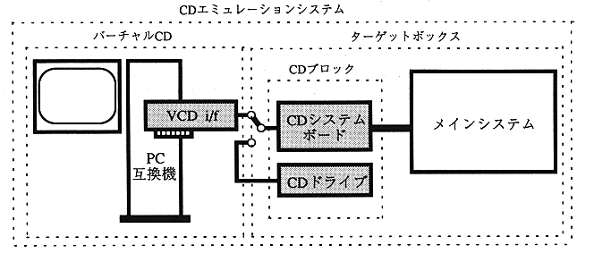

Return to menu | Go to next page
Introduction
Configuration and function overview of CD emulation system
Figure 1 shows the configuration of the CD-ROM emulation system.

Figure 1. System configuration
CD emulation system:
Consists of a virtual CD and a target box. This system emulates the operation of the software, tests it, and plays back the created write-once disc to check the operation.
Virtual CD (VCD):
A component of the CD emulation system. By commands from the CD block, data is read from an MS-DOS file on the local hard disk or network and then emulated. It consists of a PC compatible machine and VCD I / F board as hardware, and a CD emulator as application software.
CD block:
One of the components of a CD emulation system, located between the virtual CD and the main system, accepts input from the target box, sends commands to a PC compatible machine, handles data from a PC compatible machine, etc. Collectively refers to hardware and firmware that perform
VCD I / F board:
Insert into an expansion slot of a PC compatible machine to interface the CD block with the PC.
Return to menu | Go to next page